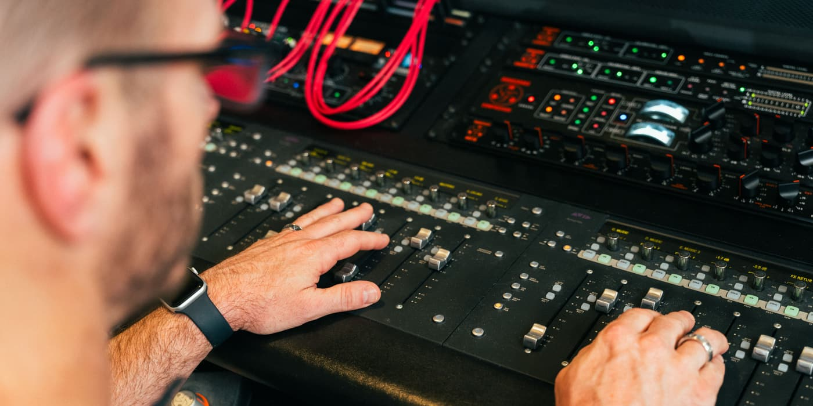

Mixing and mastering · Nashville
Already recorded?
Let me mix it.
Send me your tracks. I mix and master every song myself, in my own Nashville studio.
9 #1s13 client awards180+ five-star reviewsRecording Academy voting member

The mix is where it starts to sound like a record.
I’ve mixed records that went to #1 on iTunes, including #1 on the Australian Country chart, and one that spent 12 weeks on a Billboard chart. My mixing masterclass earned MusicTech Magazine’s Award of Excellence, and I studied with Jack Joseph Puig at Mix With the Masters in France.
Your song gets the same ears and the same room.
Rates
- Mixing · $450 per songMastering by me included
- Mastering only · $125 per songFor songs that are already mixed
- Vocal tuning · $200 per songNatural, not robotic
- Editing · $200 per songTiming and cleanup before the mix
Albums and ongoing projects are built as custom programs.
Good questions.
What should I send?
One audio file per instrument, all starting at the same point, plus a rough mix if you have one. If you’re not sure how to export them, tell me what you recorded on and I’ll walk you through it.
Do you only mix country?
Country is my home, from traditional to country-pop. I’ve mixed pop, rock and smooth jazz records too.
Can my song get Nashville players added?
Yes. If a song needs pedal steel, fiddle or real guitars, my band can play on it before the mix.
Is any of it AI?
No AI-generated music. Every note played by real Nashville musicians.
Send me the song. I’ll tell you exactly what I’d do with it.
Daniel
Book a consultation